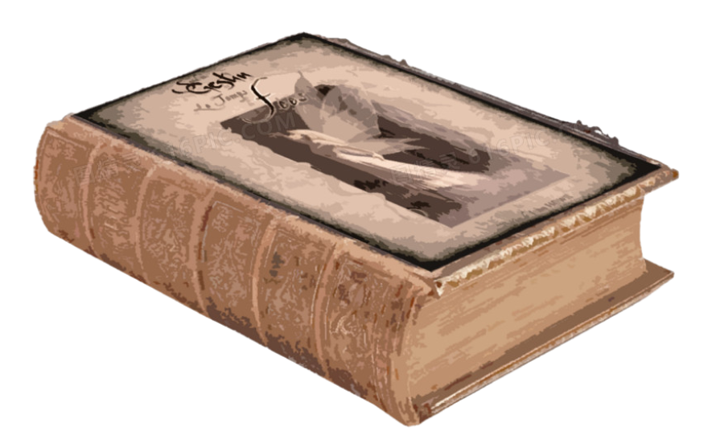

由▇▇制定的名称，通常代指次世界。偶尔也代指这个像果子一般的世界，不过没人喜欢将自己梦寐以求的家与地狱一般的次世界一概而论，通常是▇▇或某些副本中的强大存在使用这种用法。
次世界与主世界共生共依，就像果实包裹着果核，而果核不知道果实的存在。第一个坠落次世界的人在多久以前已不可考，但经推测，这里的文明大约也和主世界一样有上万年的历史，宛如一条绸带，不知过往与开端，亦不见前途，人口极不稳定是信息流传不可逾越的鸿沟，这里的传说比史料更多，也难以分辨。 当然，经过数代人的努力，次世界的建设也颇具规模，衣食住行的品质与主世界无异。前人们致力于让玩家在这里感受到原来的日常，在朝不保夕的日子里，尽可能留下好的回忆。
□e□r□□or
在人们刚刚发现次世界的时候，就发现了副本的存在。它们以门的外貌出现，开门就可进入。这样的形式就像某种游戏，有通关标准、奖励等，也衍生出了玩家这个称呼。在副本中无边止地遭受折磨，令许多人不堪重负，每天都有人在绝望中自杀，也有人同样在绝望中降临这个世界，无法预测的人员更迭，这也是次世界难以建立稳定社会体系的原因。 在传闻中，公寓群的主策划人––那位唯一的勇者，完成了所有副本，到达了门之彼端，回到了我们共同的家乡––主世界。完成副本，回到家乡。这一目标支撑着来到这里的无数玩家，我们渴望真正的白昼，亘古如一。
📻
在未知的次世界，什么都有可能发生，除了这里。公寓群的选址是经过无数先人努力测算考量的结果，称得上绝对安全，靠近水源，地势平坦。内置副本大厅、商业区、公寓区（居住区）。
选择在这一片区域建立公寓群，一个重要原因就是副本大厅，它是玩家们已知【门】的刷新最稳定的地点，【新玩家】们也都出现在这里。它位于公寓群的正中心，外表为罗马风格的圆柱状钟楼，由乳白色大理石砌成。下层为实墙，用壁柱做装饰，中间五层用连续卷。高约57米，圆形地基面积约为280平方米，共八层。内部为螺旋楼梯，以石灰岩打造，由于施工困难，只有简易的壁灯照明，【门】镶嵌在两侧的墙体中。当神圣的钟声再次激荡，新生的玩家将在钟楼的七层孕育而出。仁慈的“钟”会给予他们考验，并允诺降下足够求生的手段。
位于公寓群东部，分为一号大街和二号大街。玩家建立公会后可在两条街里挑选一个店面，每月消耗20积分的杂务费用，开办如猫咖、游乐场等的设施，可作为公会的据点。店铺上新需审核新品，上新成功后给予作者100积分，随后其与商品断绝关系，不得获得后续购买者的积分。
商品速查位于公寓群南部，环境优美，设施齐全，每位玩家均有居住资格。初始一人间，有基础的卫生间、卧室、厨房。可通过装修升级（商城）。
位于公寓群的西部，一片半径80M圆形的场地，由淡黄色光幕与外界隔断，场地中心摆放一台映射机。其外表类似提款机，将从副本中得到的“映射卡”或每日固定从映射器中吐出的“任务卡”插入其上半部分的插口中，它将开始工作。若插入“映射卡”，将在使用者的周围生成卡中角色，该角色可在公寓群中随意活动，拥有部分副本中的力量。若插入”任务卡“，任务卡中的场景与敌人将以淡黄光幕为界具现而出，直到完成任务结束。因映射体无法攻击玩家。
“映射卡”可以在商城在进行交易，或玩家之间进行交易。
由玩家前往钟楼顶层并与钟楼签订契约而产生的特殊存在。拥有在副本发展需要时，无需前往副本大厅即可进入副本的能力。他们服务于钟楼，是”钟“所诅咒的。钟楼令他们永恒呼吸压抑的空气。无论时间与空间，当钟鸣三次，他们就将归来。
NPC管理条例